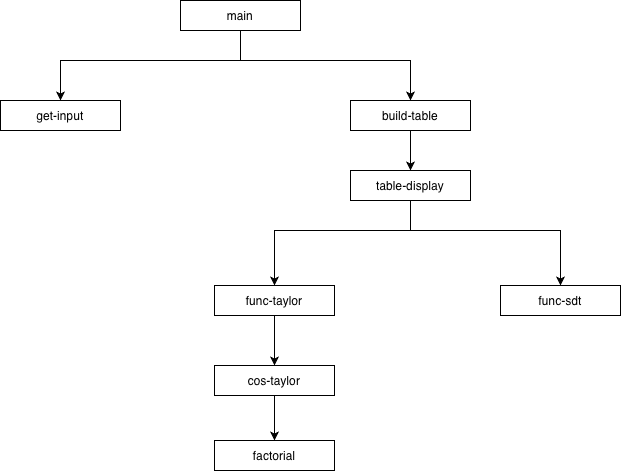
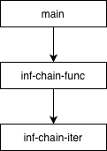
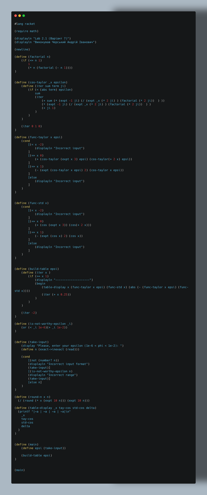
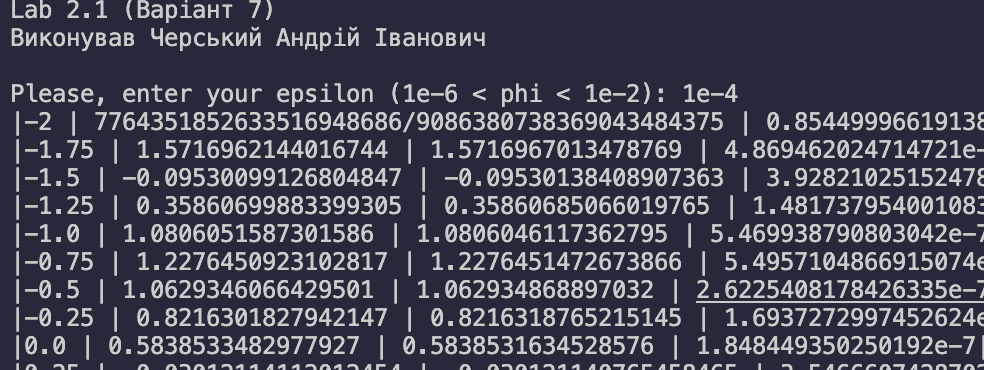

Мета: Опанувати теоретичні основи застосування рекурентних співвідношень для обчислення тригонометричних, експоненціальних, степеневих функцій та розробити програми функціональними мовам програмування для обчислення їх значень
Умова:
7.1 Обчислити значення функції Y, розвинувши функцію cos(x) у ряд Тейлора. Аргумент х змінюється від заданих з клавіатури початкового до кінцевого значень з деяким кроком
Завдання
- вибравши тип рекурсії (звичайну або хвостову), написати рекурсивну процедуру мовою SCHEME для обчислення функції cos(x) за рядом Тейлора з використанням рекурентного співвідношення (табл.1) та точності, що задається з клавіатури в діапазоні від 10-2 до 10-6;
- реалізувати процедуру розгалуження для функції Y відповідно до умови задачі;
- розробити рекурсивну процедуру для табуляції функції Y на інтервалі, що задається з клавіатури (початкове, кінцеве значення та крок). У випадку попадання в область, для якої значення функції Y не задано умовою задачі, виводити повідомлення «Функція не визначена»;
- обчислити похибку розрахунків як модуль різниці між значенням наближеного обчислення функції Y та значенням стандартної (бібліотечної ) функції cos(x);
- результати подати у вигляді таблиці з колонками: «аргумент», «розклад Тейлора», «стандартне значення», «похибка».

7.2 Обчислити нескінченний ланцюговий дріб, задавши значення точності з клавіатури. Дріб збігається до √5
 Аналіз:
Аналіз:
1. Завдання полягає у наближеному обчисленні функції cos(x) за допомогою ряду Тейлора з контролем точності. Для цього необхідно розглянути рекурентне співвідношення між членами ряду, що дозволяє ефективно обчислювати наступний член через попередній без повторного обчислення факторіалів і степенів. Важливим аспектом є вибір типу рекурсії (звичайної або хвостової), який впливатиме на ефективність та безпеку обчислень для великої кількості ітерацій. Також передбачено реалізацію умовного розгалуження для функції Y, щоб обробляти випадки, коли аргумент виходить за межі області визначення.
Другим ключовим етапом є табуляція функції на заданому інтервалі з визначеним кроком. Тут потрібно врахувати, що для деяких значень аргументу функція може бути невизначеною, і в таких випадках необхідно виводити відповідне повідомлення. Крім того, завдання передбачає порівняння наближеного значення з бібліотечним cos(x) та обчислення похибки, що дозволяє оцінити точність наближення. Такий підхід забезпечує повний контроль над обчисленнями та робить результат наочним для подальшого аналізу.
2. Завдання полягає в обчисленні нескінченного ланцюгового дробу, який збігається до 5\sqrt{5}5, із заданою точністю. Основна ідея полягає в поступовому наближенні значення дробу, поки різниця між двома послідовними наближеннями не стане меншою за заданий поріг eps. Для цього можна використати рекурсивну або ітеративну процедуру, де кожне наступне наближення обчислюється через попереднє, враховуючи структуру дробу.
Другим важливим моментом є вибір початкового наближення та критерій зупинки обчислень. Початкове значення можна взяти рівним нулю або будь-якому іншому зручному числу, а обчислення триває до тих пір, поки абсолютна різниця між поточним і попереднім наближенням не буде меншою за eps. Такий підхід дозволяє точно та ефективно обчислити значення нескінченного дробу, контролюючи похибку та забезпечуючи збіжність до 5\sqrt{5}5.
Блок-схема:


Код лабораторної работи:


Прикради виконання:


Первірка розрахунків:
1. Факт збігання стандартної та напісанної за розкладом тейлора функції демонструє коректність виконання
2. .png>)
Аналіз коду методами штучного інтелекту:
1. Код реалізує обчислення функції кількома методами: через розклад косинуса в ряд Тейлора та за допомогою вбудованої функції cos. Функція cos-taylor використовує рекурсивний ітератор для генерації членів ряду й підсумування, доки абсолютне значення терма не стане меншим за введене значення точності epsilon. Такий підхід коректний, але в реалізації є дублювання розрахунку терма: він обчислюється двічі — у sum і в term, тоді як його можна було б обчислювати один раз і передавати далі, що підвищило б ефективність.
Далі у функціях func-taylor та func-std застосовується розгалуження залежно від діапазону аргументу x. Обидві функції правильно реалізують формули, однак при виході за межі визначеної області просто друкують "Incorrect input" і нічого не повертають, що може спричиняти void-значення в подальших обчисленнях. Було б надійніше кидати помилку або повертати спеціальне значення (наприклад, #f). Також у Taylor-версії cos(+ 2 x) є потенційна помилка: пропущена пробіла між cos-taylor та виразом, але завдяки дужкам Racket інтерпретує це правильно.
Модуль введення-виведення побудовано грамотно: take-input перевіряє тип, діапазон та забезпечує повторний запит. Таблиця результатів генерується функцією build-table, яка проходить значення від –2 до 1 з кроком 0.25. Порівняння значень Taylor-косинуса та стандартного косинуса дозволяє оцінити похибку апроксимації. Разом з тим, програма двічі викликає func-taylor та func-std у table-display для кожного значення, що призводить до подвоєння обчислень; оптимальніше зберігати результат у локальних змінних. Загалом код добре структурований, але має резерви оптимізації та невеликі ризики у випадках некоректного вводу.
2. Програма обчислює значення нескінченного ланцюгового дробу, який збігається до √5, використовуючи ітеративний процес з контролем точності. Функція inf-chain-func приймає epsilon і всередині містить локальну рекурсивну функцію inf-chain-iter, що обчислює наступний елемент ланцюга за правилом curr → 4 + 1/curr. Умова зупинки заснована на різниці між двома послідовними наближеннями, що є коректним критерієм збіжності.
Виклик (inf-chain-iter 0 4) задає початкові значення: prev = 0, curr = 4. Це достатньо грубий, але робочий старт. Після досягнення межі точності результат підставляється у формулу 2 + 1/curr, що завершує збірку ланцюгового дробу. Логіка реалізована коректно, однак структура дробу в коментарі була б корисною, щоб легше зрозуміти формулу, яку реалізує код. Також варто зауважити, що Racket автоматично працює з плаваючими числами, але через поділ на curr у певних випадках можливий ризик ділення на нуль, хоча стартові умови роблять цей сценарій малоймовірним.
Програма читає epsilon без перевірки формату та діапазону — це слабке місце. Якщо користувач введе рядок, від’ємне число або нуль, програма аварійно завершиться або зациклиться. У порівнянні з попереднім кодом, тут бракує функції перевірки вводу, яка забезпечувала б robustness. Решта програми проста, лаконічна, коректно виконує ітеративне наближення та друкує результат. Загалом код працює правильно, але для надійності й користувацьких сценаріїв варто додати захист від некоректного вводу та обробку потенційних помилок.
Висновок:
У представленій програмі реалізовано ефективний метод наближеного обчислення нескінченного ланцюгового дробу через ітеративний процес зі зменшенням похибки. Алгоритм використовує різницю між двома послідовними наближеннями як критерій зупинки, що забезпечує коректне та контрольоване зближення до точного значення. Завдяки цьому результат відповідає математичним властивостям дробу, який збігається до √5.
Структура коду залишається простою та легкою для розуміння: основні обчислення інкапсульовано всередині допоміжної рекурсивної функції, а кінцевий результат формується у зрозумілому вигляді. Такий підхід показує хороше розділення логіки та робить функцію гнучкою для перевикористання з різними значеннями точності. При цьому використання плаваючих чисел у Racket дозволяє уникнути проблем із надмірною точністю або переповненням.
Разом із тим, програма могла б бути більш захищеною від помилок користувача. Відсутність перевірки введеного ε допускає некоректні значення, які можуть спровокувати неправильну роботу функції або нескінченну рекурсію. Додавання фільтрації вводу та обмежень значень зробило б рішення більш надійним і завершеним. Незважаючи на це, реалізація правильно виконує свою обчислювальну задачу та демонструє розуміння роботи з ітеративними процесами й контролем точності.
Menu